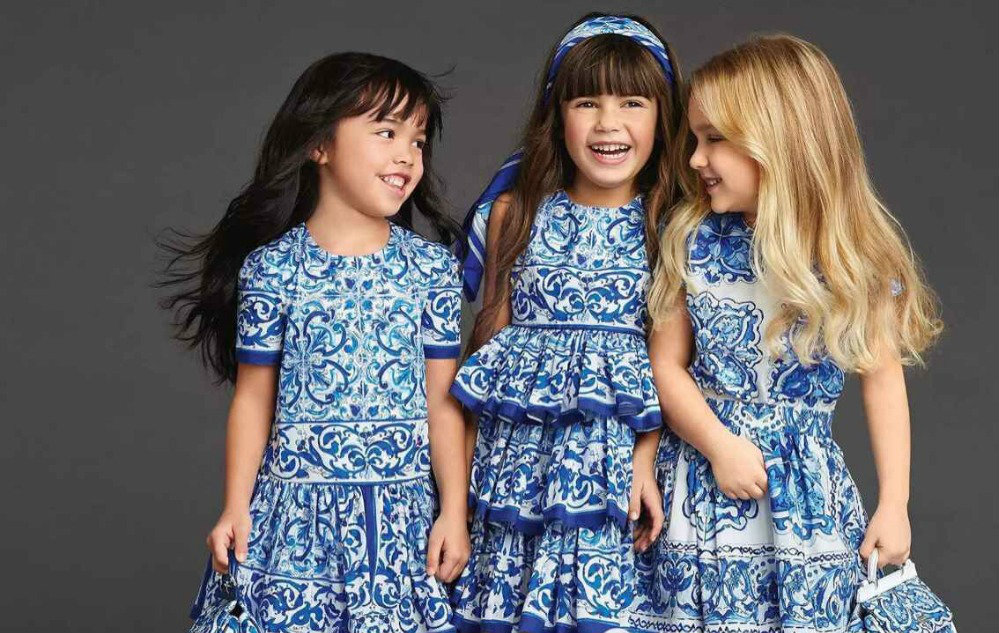
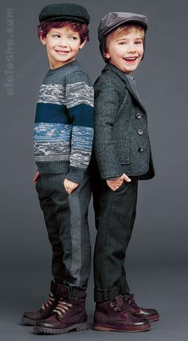

| Kids Fashion Shows are a fun, easy way to raise money for our coffee. Our Kids on the Catwalk team put on a professional show that all the family will enjoy, with minimal pre-event organization required by you. Simply recruit some children to model and a few helpers on the day and that’s it! |
|
Our vision is to inspire the kids' world. Our mission is to provide a complete experience for todays’ kids with exciting fashion lifestyle products. |
|  |
A Children’s Fashion Show is a great event to bring families together and with our unique range of children’s clothing. Parents and grandparents love to buy clothing that is different and our range will give them something different. |
Great music and clothes! Following a short creative workshop, the children take part in a full catwalk show that lasts about 45 minutes. Our well trained staff will teach them poses, dance moves and how to walk, using specially selected music that they will love. Audiences are always commenting on how much the children have achieved in such a short time. |
 |
Our teams are totally focused on creating a fun event for children as it is our aim that every child will benefit from taking part by raised self –esteem and confidence and parents and models will take home lasting memories. |